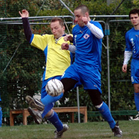
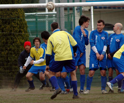

|
YC&AC, Sun 2nd April. The Saitama Jets finally won promotion to Division 1 in their third TML season, after playing out a tight 3-3 draw with the Wall Street Clash. The team from Saitama were not at their best against a tough Clash side, but showed their determination by getting back into the game after being behind three times. Both teams had chances to win it at the end, but veteran strikers on both sides lacked the composure to grab a late winner.
The Jets form has been somewhat sporadic in recent weeks, and the fluid attacking play of earlier in the season has been missing. However poorly the team has played, with Gildart and Loren around, goals are always likely. So, lining up for the first time this season with neither of our main goalscorers was a concern. Playing with the wind in the first half, the Jets tended to overhit balls through to Mike Passmore and Mark Eite, and despite having a lot of the ball, we were struggling to create clear chances. The Clash were tidy in midfield, and generally making a better job of playing into the wind than the Jets were of playing with the supposed advantage.
It was the Wall Street team who struck first. A poor clearance on the left side of the Jets defence was punished by a decent cross, which the Japanese Clash player on the far post squeezed home from a tight angle. The Jets were frustrated, and pressed through Chris Piper and Passmore. Rob Keating was having a good game, winning a lot of the ball in the centre of midfield and distributing it usefully. It was his flukey goal that drew the Jets level for the first time. From the halfway line, he lobbed a pass through for a striker, but the ball got caught in the wind, bounced once, and sailed over the unfortunate Clash keeper. The Clash came straight back, and scored a somewhat controversial second. The ref, for reasons known only to him, incomprehensibly awarded the Clash a throw-in. It was taken quickly, worked up to the left side, and the ball whipped in. The semi-clearance was headed back in by the Clash's silver haired striker, to be acrobatically vollied in by the big lad up front and saw the Jets fall 2-1 behind. Just before half-time, Keating again received the ball in the centre circle, tried to play in Eite, and ended up bouncing another freak goal over Rocky in the Clash goal. 2-2 at the break, and the Jets dressing room (metaphorically) was an unhappy place to be.
The second half saw a bit more football played from the Saitama team. Passmore played well on the right side of midfield, Simon Bentz was impressive at left back, and keeper/defender/striker Jack Faricy provided some fresh legs up front. Hembise and Rayner were solid in the centre of defence, while Kobayashi and Keating in front of them tried to keep up with Sam, the athletic Clash midfielder. Straight after he came on, Faricy linked up well with Eite and rolled a left-foot shot towards the corner that the Clash goalie did well to keep out. Passmore and Eite then had half-chances, but were unable to put them away. As the half wore on, it seemed that it was only a matter of time before the Jets added to their two first-half goals. However it was the Clash who once more went ahead. The big lad Sam played a one-two, no-one went with him, and he finished smartly past Harada. Garner came back in for the Jets, and almost levelled with a volley that was well-saved. The Jets were dominating possession, and Passmore in particular found himself in acres of space with the ball on a number of occasions. Unfortunately, the final shot or pass was lacking each time. With around 5 minutes to go, Garner's cross from the left picked out the advancing Kobayashi, who went down in the area. Whether he was pushed or pulled or just fell on his own should be debated over beer at the end-of-season party, but the ref said penalty. Garner, who claims to have not missed a PK since 2002, expertly converted the kick.
With just a few minutes left on the clock it was 3-3. Both teams had time for more chances. Sam for the Clash hit the bar after another fine piece of running. Veteran striker/keeper/TML guru Sid Lloyd sneaked in from a goal-hanging position to balloon a free header over the bar. Final miss, and the worst one of the day, went to Jets captain Mark Eite. Clearly thrilled by his rare league goal last week, he skied a simple tap-in from about 3 yards, somehow managing to hit the top of the Yokohama Arena when it would have been easier to hit the net.
All in all, it was an entertaining game, and probably a fair result. Shane's loss to the British Embassy sealed promotion for both the Jets and the Kanto Celts.
Well done Celts; Slainte to you! Let's hope we do better next year than KGFC and the Nova Knights.
Match photographer: IM.
Reporter: Gary Garner.
|